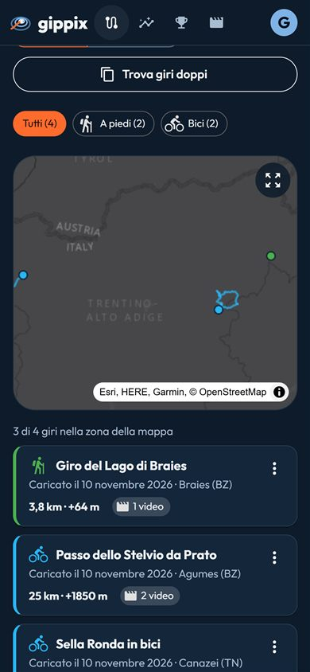

Guida · 4 minuti di lettura
Come aggiungere un'app web alla schermata Home, su Android e iPhone
Non tutte le app passano dallo store. Molte si aprono dal browser e funzionano benissimo così: per averle a portata di dito basta aggiungerle alla schermata Home, dove compaiono con la loro icona come le altre app. Ecco come si fa su Android e su iPhone.

Che cos'è un'app web
Un'app web è un sito costruito per funzionare come un'app: si adatta allo schermo del telefono, ha i suoi pulsanti e menu e conserva i tuoi dati nel tuo account. Molte sono anche PWA (Progressive Web App): una volta aggiunte alla schermata Home si aprono a schermo intero, senza la barra degli indirizzi, proprio come un'app installata.
Perché sono comode
- Niente store: le apri da un link, le provi subito.
- Poco spazio: non scarichi decine di megabyte.
- Sempre aggiornate: l'ultima versione arriva da sola.
- Funzionano ovunque: telefono, tablet e computer, con gli stessi dati.
Su Android (con Chrome)
- Apri il sito dell'app con Chrome.
- Tocca il menu con i tre puntini in alto a destra.
- Scegli "Aggiungi a schermata Home" oppure "Installa app" (la voce cambia a seconda del sito e della versione di Chrome).
- Conferma il nome e tocca Aggiungi o Installa.
A volte Chrome stesso propone l'installazione con un avviso in basso. Con altri browser, come Samsung Internet, Firefox o Edge, la voce si trova nel loro menu con un nome simile.
Su iPhone e iPad (con Safari)
- Apri il sito dell'app con Safari.
- Tocca il pulsante Condividi (il quadrato con la freccia verso l'alto).
- Scorri e scegli "Aggiungi alla schermata Home".
- Controlla il nome e tocca Aggiungi.
Nelle versioni recenti di iOS la stessa opzione è disponibile anche da alcuni altri browser; se non la trovi, usa Safari.
SpesaFox per la spesa, SpeseAuto per i costi dell'auto, Gippix per rivedere i tuoi giri in volo 3D. Gratis, senza pubblicità, dal browser del telefono.
Scopri le tre appSul computer
Chrome ed Edge permettono di "installare" molte app web anche su Windows e macOS: cerca l'icona di installazione nella barra degli indirizzi oppure la voce nel menu del browser. L'app si apre poi in una finestra a sé, senza schede.
Domande e piccoli problemi
Non trovo la voce nel menu
Assicurati di usare il browser giusto (Chrome su Android, Safari su iPhone) e di non essere in una finestra di navigazione in incognito. Se apri il link da un'app come Instagram o Facebook, si apre nel loro browser interno: usa il menu per "Apri nel browser" e riprova da lì.
Come la tolgo?
Come qualsiasi app: tieni premuta l'icona e scegli "Rimuovi" o "Disinstalla". I dati del tuo account restano sul server: se la riaggiungi e accedi, ritrovi tutto.
E le notifiche?
Le app web possono inviare notifiche, se l'app le prevede e se le autorizzi. Su Android funzionano in genere come quelle delle app normali. Su iPhone, invece, le notifiche delle app web arrivano solo dopo averle aggiunte alla schermata Home e con una versione recente di iOS. Molte app, per gli avvisi importanti come promemoria e scadenze, usano anche l'email o canali come Telegram, così arrivano comunque.
Cambio telefono: cosa succede?
Niente di grave: sul telefono nuovo apri di nuovo il sito, accedi con la tua email e la tua password e aggiungi l'icona alla schermata Home. I dati sono quelli di prima.
Funziona senza internet?
Dipende dall'app. Molte app web hanno bisogno della connessione per salvare e sincronizzare i dati, perché li conservano nel tuo account e non solo sul telefono.
Le nostre app sono app web
SpesaFox, SpeseAuto e Gippix si usano così: apri il sito, crei l'account e, se vuoi, le aggiungi alla schermata Home.
- spesafox.it: la lista della spesa condivisa che fa risparmiare;
- speseauto.it: rifornimenti, consumi e scadenze dell'auto;
- gippix.it: dal file GPX al video 3D del tuo giro.
Per capire come scegliere app utili e rispettose, leggi anche app gratuite senza pubblicità: come riconoscerle.
Domande frequenti
Che differenza c'è tra un'app web e un'app dello store?
L'app web si apre dal browser e non va installata dallo store; aggiunta alla schermata Home si usa come un'app normale. I dati stanno nel tuo account e li ritrovi su ogni dispositivo.
Su iPhone devo usare per forza Safari?
Safari è il modo più sicuro per trovare "Aggiungi alla schermata Home". Nelle versioni recenti di iOS l'opzione c'è anche in alcuni altri browser.
Se tolgo l'icona perdo i dati?
No: i dati restano nel tuo account. Riaggiungi l'app, accedi e ritrovi tutto.
 App gratuite utili e senza pubblicità: come riconoscerle (e quali usare per casa, auto e montagna)
App gratuite utili e senza pubblicità: come riconoscerle (e quali usare per casa, auto e montagna) Come organizzare spesa e costi di famiglia: un metodo semplice in 4 passi
Come organizzare spesa e costi di famiglia: un metodo semplice in 4 passi